Von der Alltagserfahrung zur physikalischen Beschreibung — Kräfte verstehen, als Vektoren darstellen und grafisch addieren.
Einheit 1
Du schiebst einen schweren Schrank über den Boden. Du spürst: Du brauchst Kraft. Aber wie stark? Und in welche Richtung? In der Physik ist Kraft eine messbare Grösse.
Beim Schieben kommt es auf zwei Dinge an: Wie stark du schiebst — der Betrag. Und wohin — die Richtung.
Die Einheit heisst Newton (N). 50 N nach rechts ist etwas anderes als 50 N nach oben.
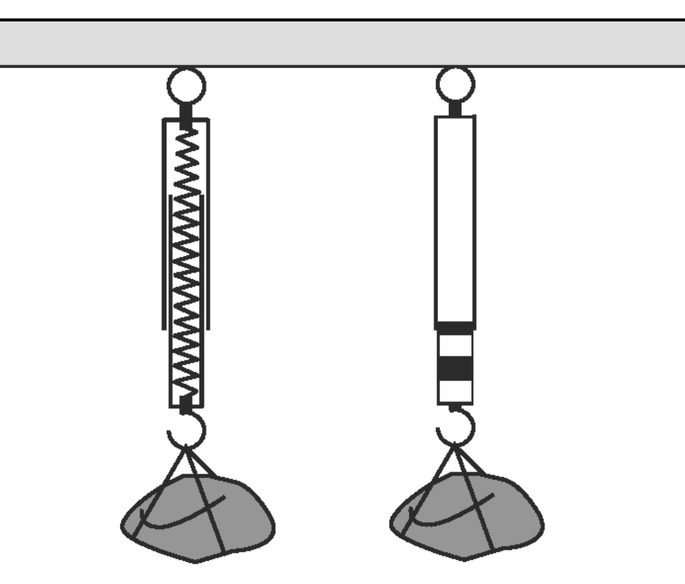
Federkraftmesser: Je stärker die Kraft, desto mehr dehnt sich die Feder.
Verformen — Schwamm zusammendrücken.
Beschleunigen — Gaspedal treten.
Bremsen — Velobremse ziehen.
Richtung ändern — Lenkrad drehen.
Die Erde zieht nach unten.
\( g \;=\; 9.81 \;\frac{\text{N}}{\text{kg}} \) auf der Erde.
Unterlage drückt rechtwinklig zurück. «Normal» = «rechtwinklig». Bei horizontaler Fläche: \( F_{\text{N}} = F_{\text{G}} \).
Kraft am Seil, in Seilrichtung.
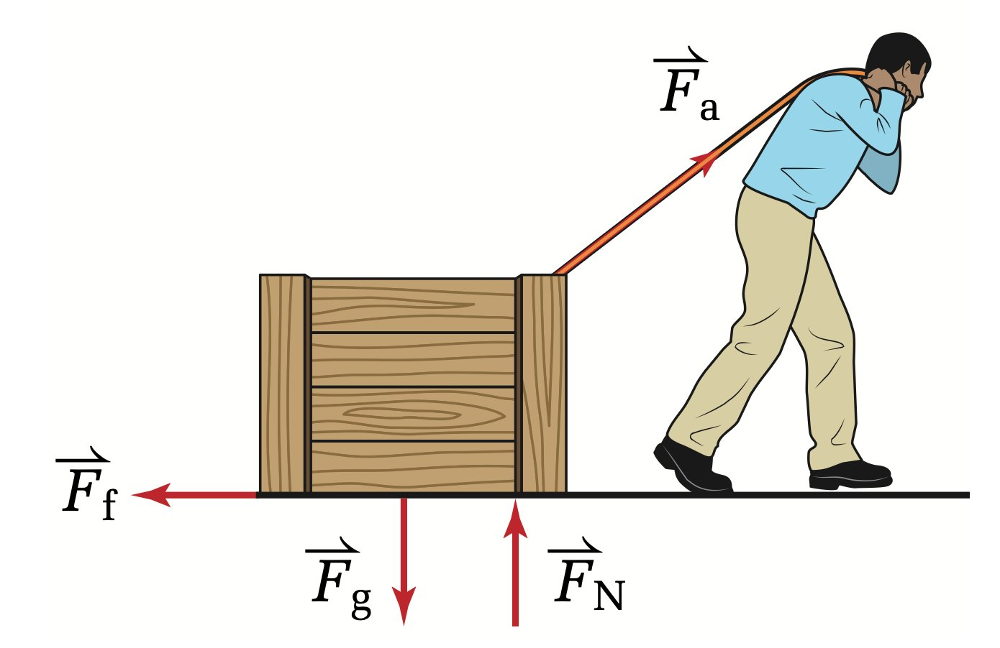
Alle vier Kraftarten auf einen Blick.
Reibung widersetzt sich der Bewegung. Sie hängt ab von der Oberfläche (rau → stark) und der Anpresskraft.
Reibung hängt nicht von der Kontaktfläche und nicht von der Geschwindigkeit ab.
Körper steht still. Am grössten.
Körper gleitet. Kleiner als Haftreibung.
Körper rollt. Am kleinsten.
| Flächen | \( \mu_{\text{G}} \) | \( \mu_{\text{H}} \) |
|---|---|---|
| Holz / Holz | 0.4 | 0.6 |
| Stahl / Stahl | 0.1 | 0.15 |
| Stahl / Eis | 0.014 | 0.027 |
| Pneu / Asphalt | 0.6 | 1.0 |
Kraft hat Betrag (Newton) und Richtung. Kräfte verformen, beschleunigen, bremsen oder ändern die Richtung. Wichtige Kräfte: Gewichtskraft (↓), Normalkraft (⊥), Reibungskraft (← Bewegung), Zugkraft (→ Seil).
Einheit 2
Kraft hat Betrag und Richtung — das macht sie zum Vektor. Wie zeichnet man so etwas?
\( \vec{F} \) wird als Pfeil gezeichnet: Länge = Betrag, Richtung = Wirkrichtung.
Ein Skalar hat nur Betrag (z.B. Masse, Temperatur).
Lege einen Massstab fest: z.B. 1 cm = 1 N.
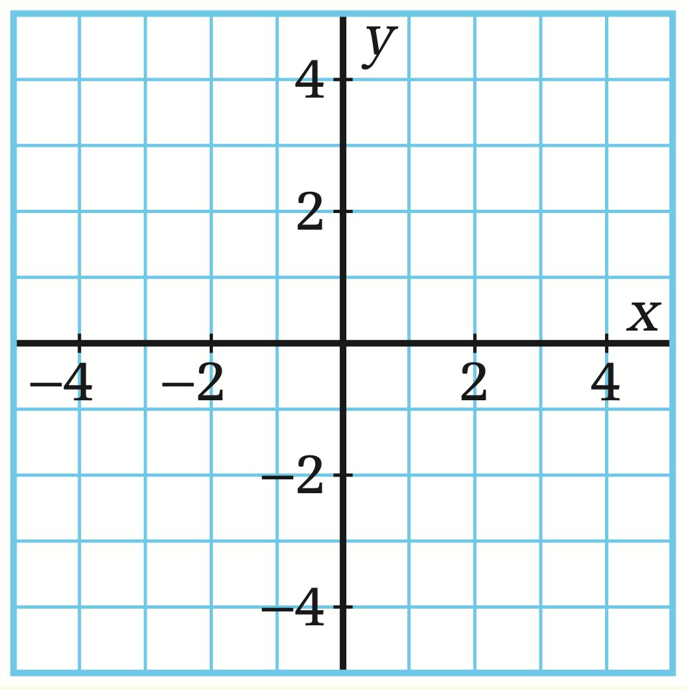
Koordinatensystem mit Massstab — bereit für Kraftpfeile.
Körper als Punkt. Alle Kräfte als Pfeile vom Punkt aus. Jeden Pfeil beschriften (\( \vec{F}_{\text{G}} \), \( \vec{F}_{\text{N}} \), …).
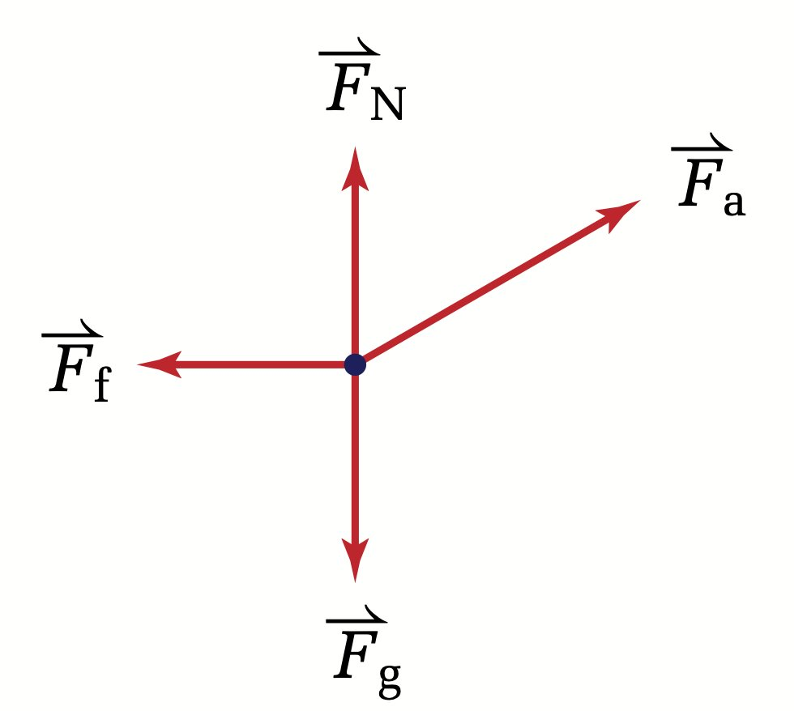
Freikörperdiagramm der gezogenen Kiste.
Vektor = Betrag + Richtung (Pfeil). Skalar = nur Betrag (Zahl). Im Freikörperdiagramm starten alle Kraftpfeile vom selben Punkt.
Einheit 3
«3 Schritte nach rechts, dann 4 nach oben» — wo landest du? Du zählst zusammen. Genau so addiert man Kräfte.
Spitze-an-Ende: Anfang des zweiten Vektors an die Spitze des ersten. Der resultierende Vektor geht vom Start des ersten zur Spitze des letzten.
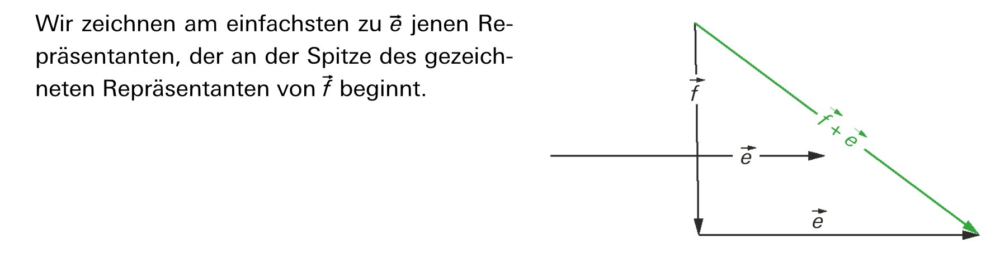
Spitze-an-Ende: Summenvektor \( \vec{f} + \vec{e} \) in Grün.
Koordinatensystem und Massstab.
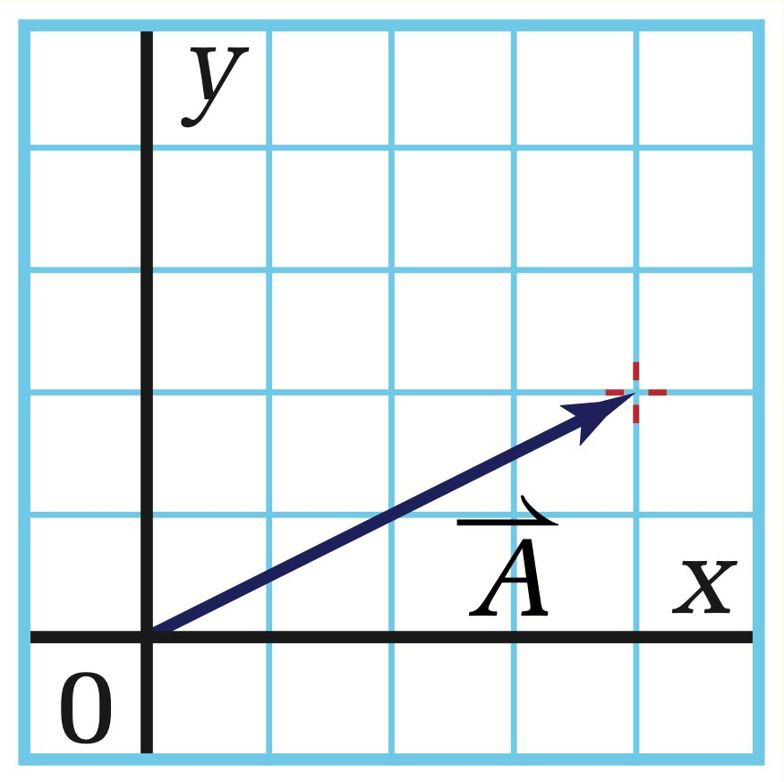
\( \vec{A} \) vom Ursprung einzeichnen.
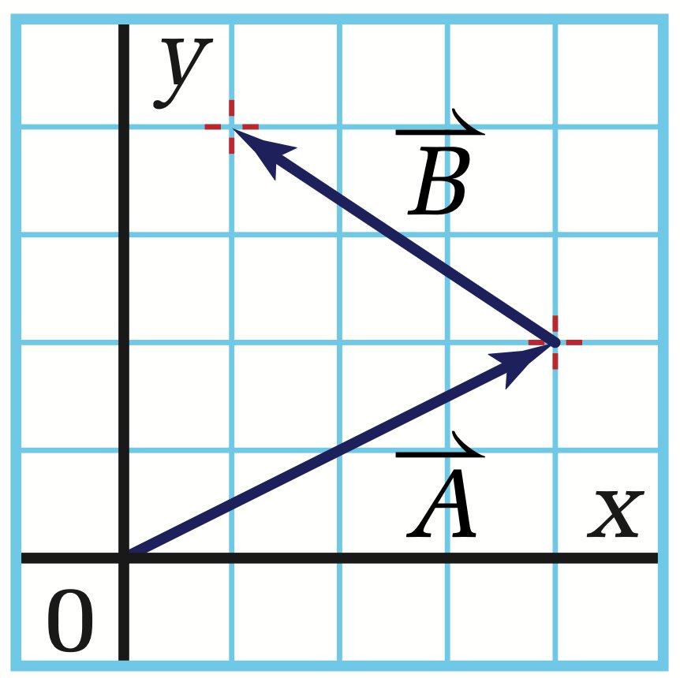
Anfang von \( \vec{B} \) an Spitze von \( \vec{A} \).
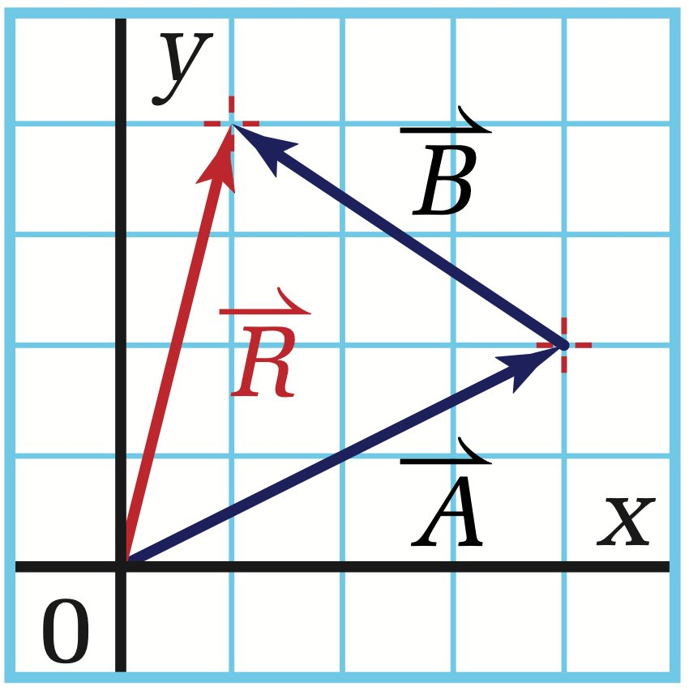
\( \vec{R} \) zeichnen: Ursprung → Spitze \( \vec{B} \).
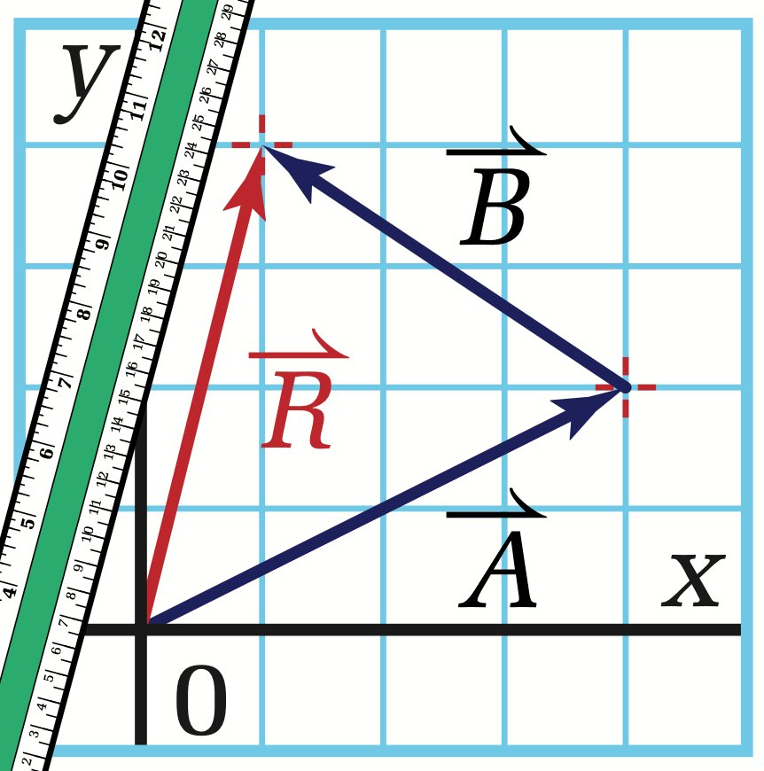
Länge messen → Betrag.
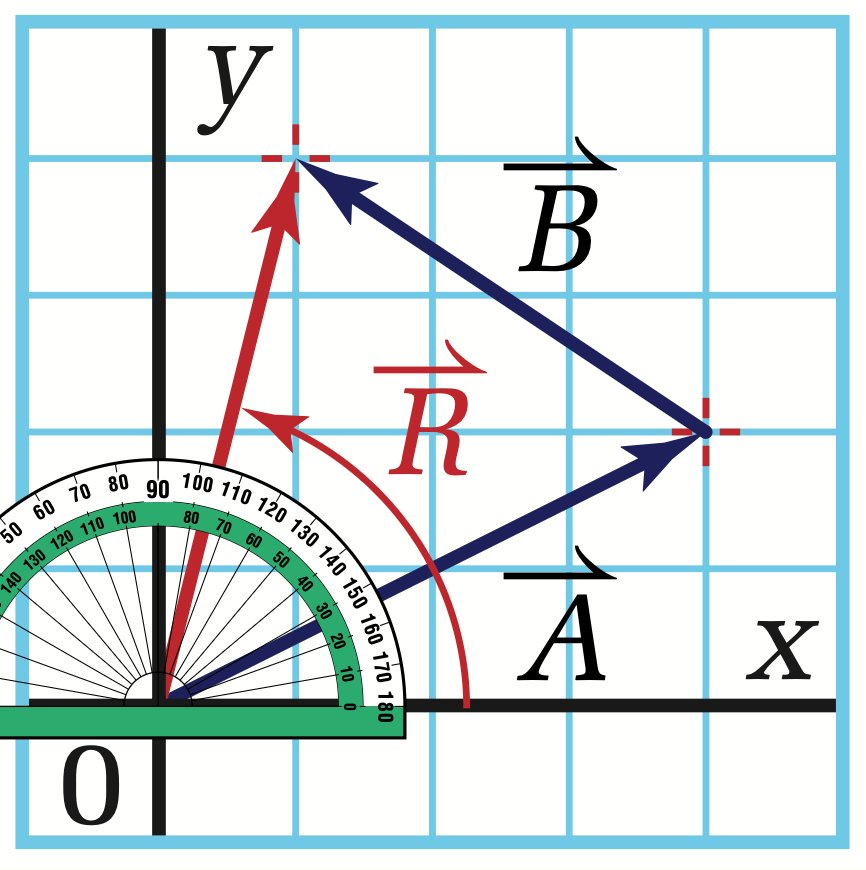
Winkel messen → Richtung.
Alle Kräfte heben sich auf → resultierender Vektor = null. Der Körper bleibt in Ruhe oder bewegt sich gleichförmig.
Gegenvektor bilden (umdrehen) und addieren:
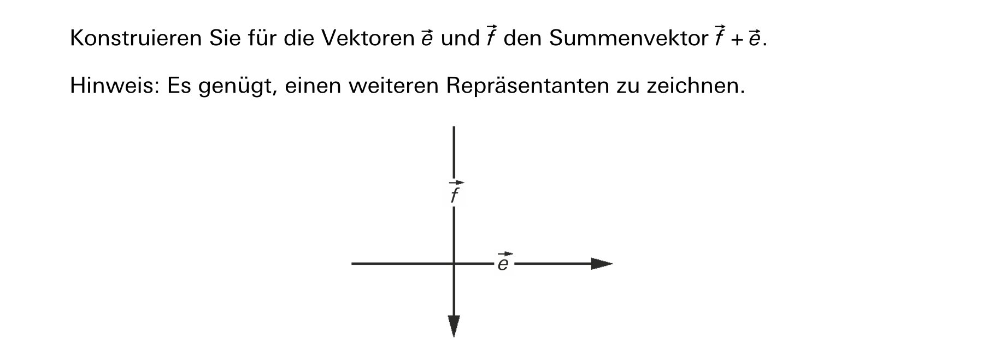
Übung: Konstruiere \( \vec{f} + \vec{e} \).
Spitze-an-Ende: Anfang des zweiten an Spitze des ersten. Summenvektor = Start des ersten → Ende des letzten. Subtraktion = Gegenvektor addieren.